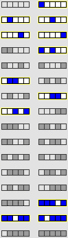
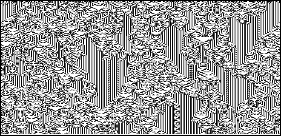

4. Cellular Automata and Fractal Evolution
Predicting Cellular Automaton Behavior
From the table we see λ = 12/32. This CA is class IV. The
background
of vertical stripes is the stable behavior; the foreground generates the long-term correlations.


Return to
Predicting cellular automaton behavior
.